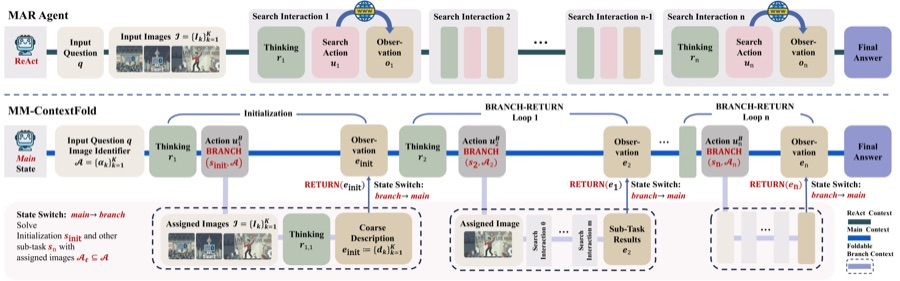
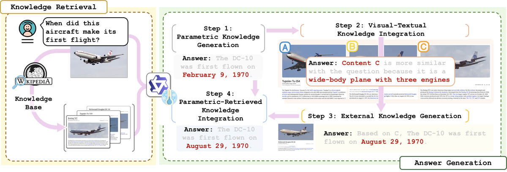

NMVM, co-authored by Enhao Cheng, appears at KDD 2026. Read more →
Multimodal Autonomous Intelligence
We study how intelligent systems learn from multimodal information, reason with knowledge, and act in complex environments.
A research group at PALM Lab, Southeast University, led by Prof. Fan Liu.

Multimodal understanding
Multimodal representation · Knowledge reconciliation · Recommendation
Foundation models
Language models · Semantic learning · Information retrieval
Autonomous intelligence
Tool use · Context management · Agentic retrieval
News
MM-ContextFold and FIG are accepted as Oral presentations at ACM MM 2026. Details ↗
CoRe-MMRAG appears in the ACL 2025 main conference proceedings. Read more →
Research highlights
All publications →
MM-ContextFold
Keep the plan, load images when needed. A context-folding framework for agents working through extended multimodal retrieval tasks.

Factual Image Generation
Retrieve real-world evidence before generating an image. An agentic approach to improving factual consistency in visual generation.

CoRe-MMRAG
Reconcile what a model knows with what it retrieves, bringing visual and textual evidence together for knowledge-based question answering.